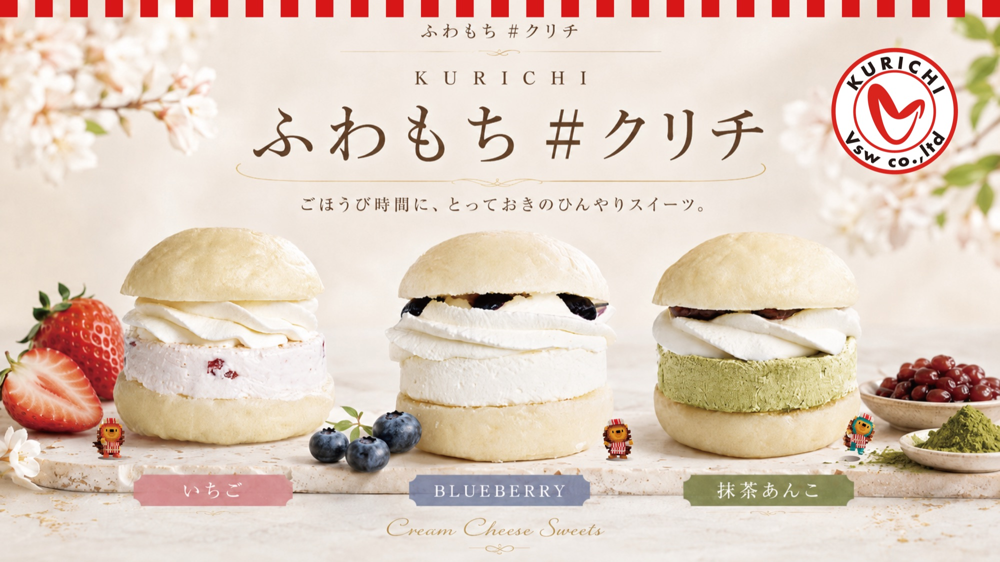
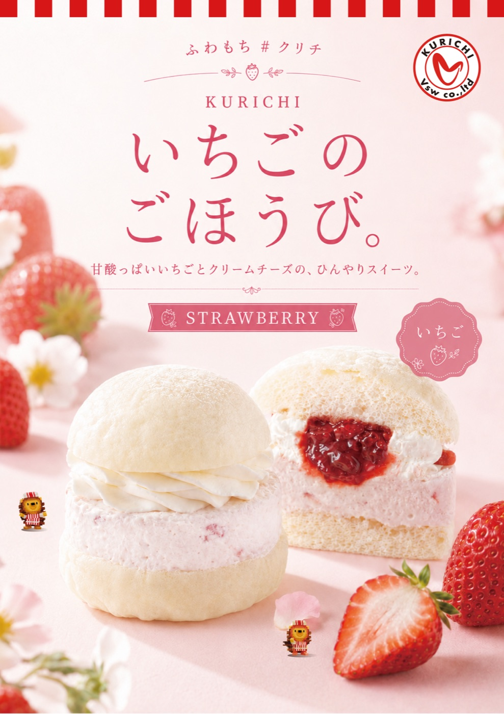
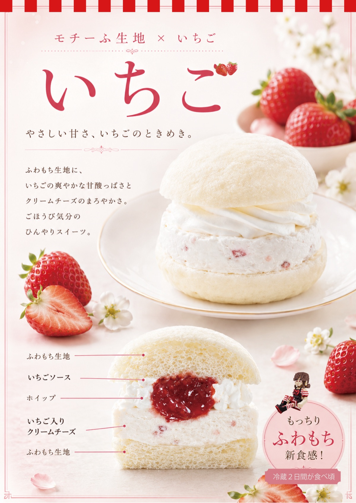
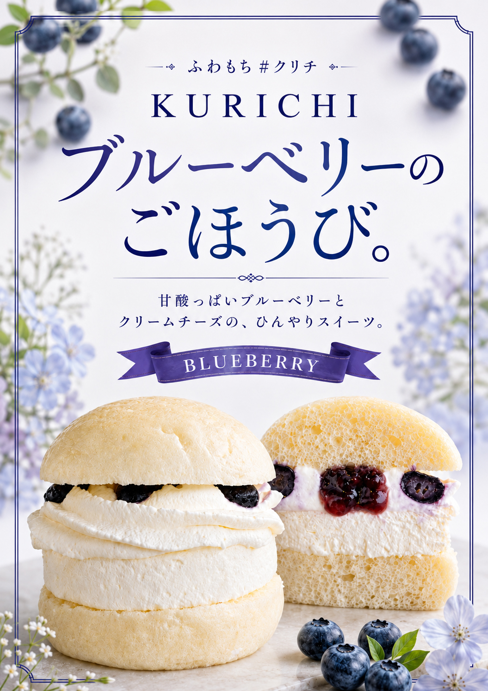
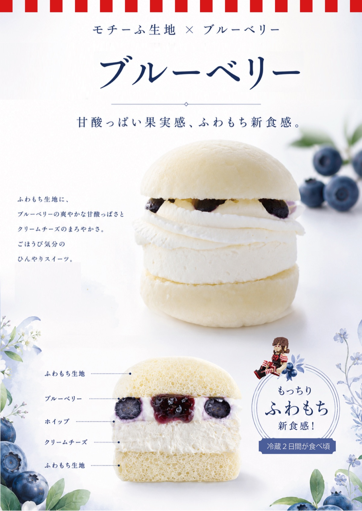
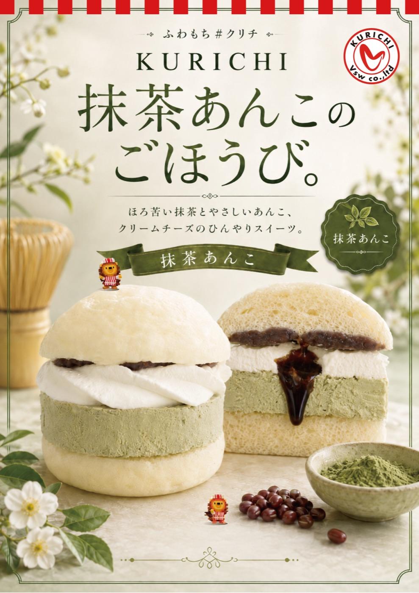
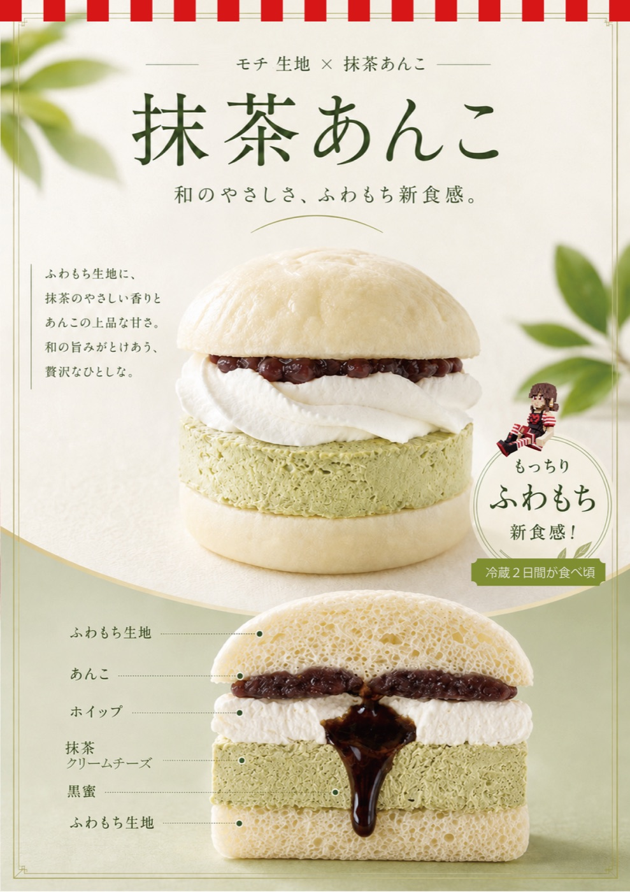

CREAM CHEESE SWEETS
なめらかなコクを、
ふわもち食感で包み込む。
ふわもち食感の白バンズに、なめらかなクリームチーズのコクを閉じ込めた #クリチdisc。甘さ控えめで軽やかな口どけのホイップと、中心からとろけるソースやあんこが全体をつなぎ、香り・甘み・食感を幾重にも重ねました。ごほうび時間に、とっておきのひんやりスイーツです。
ひんやり、ふわり、もちり、
口の中でほどける。
いちご
やさしい甘さ、いちごのときめき。
ふわもち食感の白バンズで、人気の #クリチ（いちご）をアップデート。なめらかなクリームチーズのコクを閉じ込めた、ドライいちご入りの苺クリチdiscに、甘さ控えめで軽やかな口どけのホイップ。中心からとろけるいちごソースが全体をつなぎ、果実の香り、甘酸っぱさ、食感を重ねました。


ブルーベリー
甘酸っぱい果実感、ふわもち新食感。
ふわもち食感の白バンズで、人気の #クリチdisc（プレーン）をベースに。甘さ控えめで軽やかな口どけのホイップに、ひんやり果実のブルーベリーを散りばめました。中心からとろけるブルーベリーソースが全体をつなぎ、果実の香り、やさしい酸味、みずみずしい食感を重ねました。


抹茶あんこ
和のやさしさ、ふわもち新食感。
ふわもち食感の白バンズで、なめらかなクリームチーズのコクを閉じ込めた抹茶クリチdiscに、甘さ控えめで軽やかな口どけのホイップ。やさしいあんこと、とろりとほどける黒蜜が全体をつなぎ、抹茶のほろ苦い香り、やさしい甘み、奥行きのある食感を重ねました。


いちばんおいしいのは、
冷やして、とけてから。
買ってすぐより、ちょっと待つのがおすすめ。
冷蔵庫でゆっくり冷やすほどクリームチーズとホイップがほどけ、
ふわり・もちりの口どけが、いちばん引き立ちます。
目安は冷蔵で2日間。とけて馴染んだころが、ふわもち#クリチのいちばんのおいしさです。
キンと冷やして、とろける口どけをお楽しみください。
時間と温度が完成させる、
新感覚・新食感 #クリチ。
3つのごほうび、その手に。
※販売フレーバー・販売形態・在庫状況は店舗により異なります。最新の取り扱い状況は、各店舗・オンラインショップにてご確認ください。